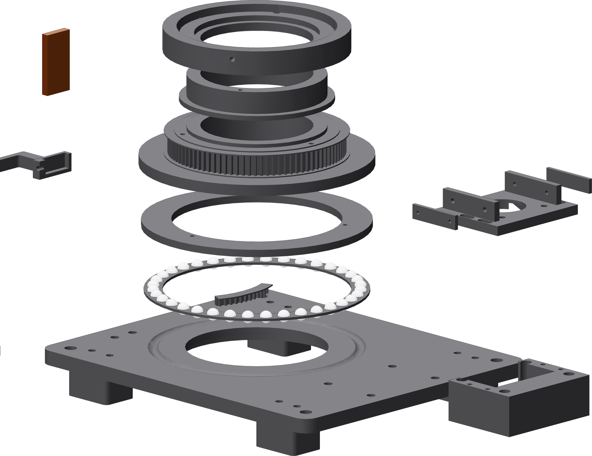

The whole build
Fourteen printed shapes, one crosscut of copper bar and a controller, in nine parts and this order.

| Part of the job | Pages |
|---|---|
| 8–11 | |
| Heat-set inserts | 12–15 |
| Base and feet | 16–17 |
| Bearing | 18–21 |
| Drive | 22–28 |
| Nest and contact | 29–32 |
| Controller | 33–39 |
| Commissioning | 40–45 |
| Welding with it | 46–47 |
Do not skip ahead
The bearing has to run free before the drive goes on, and the drive has to time correctly before a tube is loaded. Each is a gate, each is cheap to check, and each is expensive to unwind.